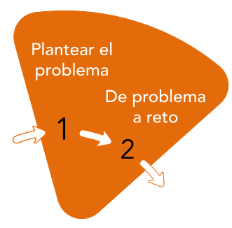

Identificar
El reto tiene que cumplir con lo visto en 1.1 ¿Qué es un reto?
Vamos a tomar como ejemplo la siguiente situación problemática. (Podría aplicarse en un ciclo de grado medio de Mantenimiento Electromecánico, para trabajar R.A.’s del módulo de Técnicas de unión)

Paso 1: Proponer al alumnado que diseñe, construya e instale un soporte de proyector para el salón de actos.
Tendrán que entregar (productos):
- El soporte del proyector fabricado.
- Los planos de las piezas fabricadas y del montaje.
Una memoria que incluya:
- Instrucciones de uso e instalación.
- Proceso de fabricación llevado a cabo
- Instrucciones de mantenimiento.
- Una presentación final del reto al resto de la clase y al equipo directivo.
Dependiendo de la complejidad se puede acompañar con una historia inspiradora.
Dentro de la exposición se integra el paso siguiente:
Paso 2: Les contamos que, dentro de 15 días, el centro va a recibir una visita muy importante y que el equipo directivo les pide que preparen una forma de instalar el proyector de forma discreta, elegante, … (se pueden poner todos los condicionantes y características que se quiera).
Photo by Possessed Photography on Unsplash